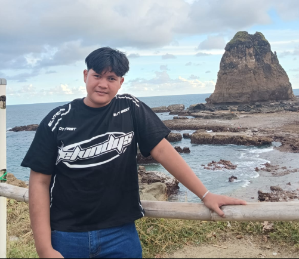
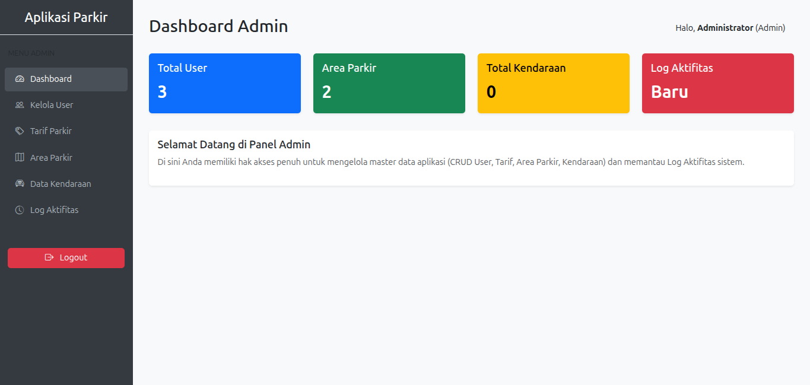
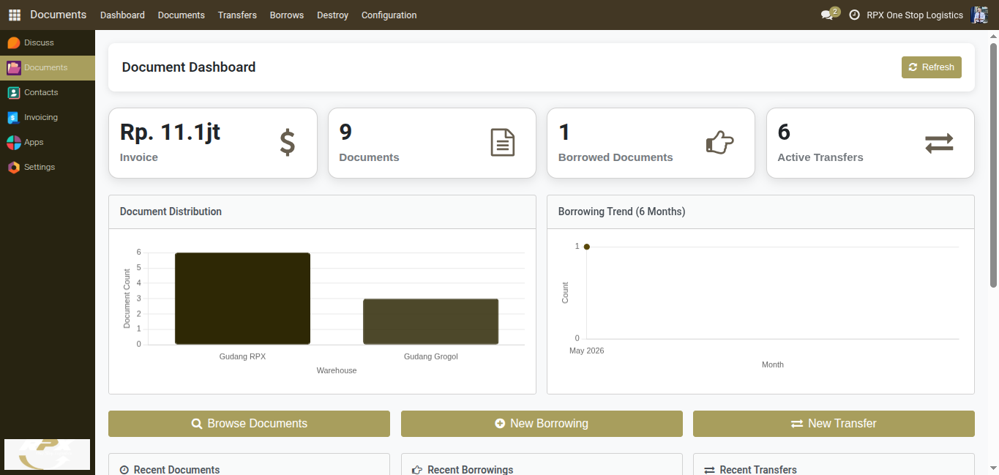
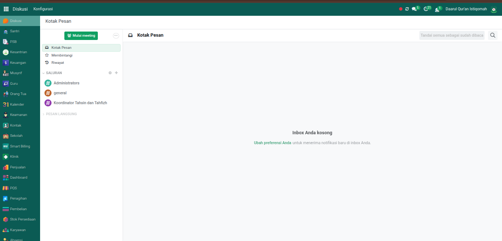
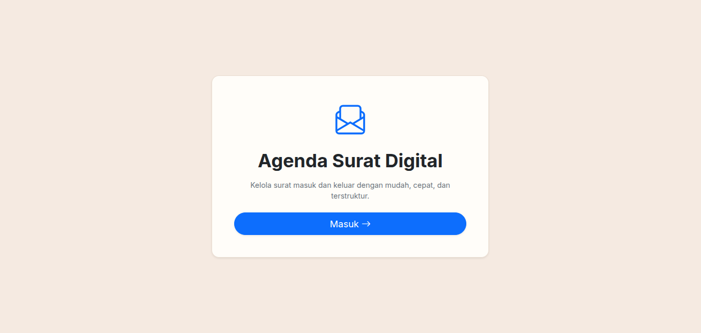
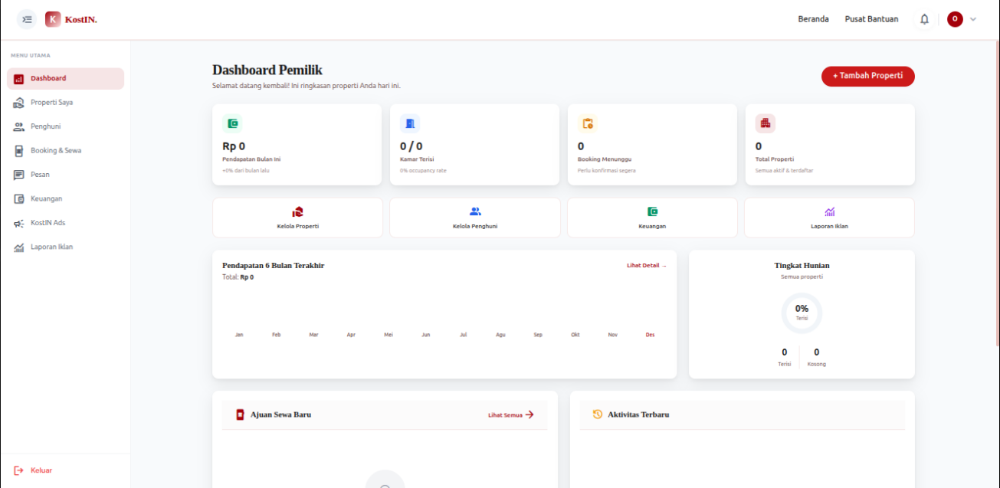
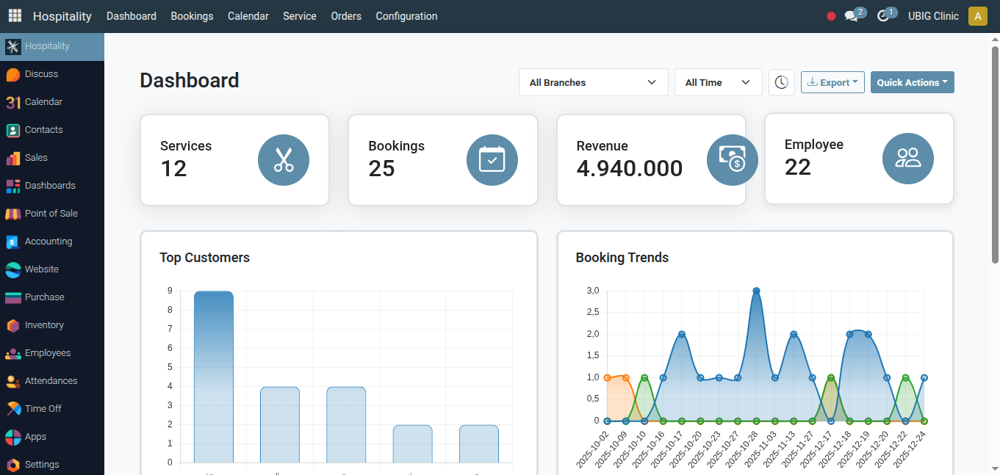

Selamat datang di portofolio saya. tujuan saya membuat portofolio ini adalah untuk menampilkan keterampilan dan perjalanan saya dalam dunia pengembangan perangkat lunak, khususnya pembuatan aplikasi web.

Saya adalah seorang pelajar yang dulu nya sangat tidak tertarik dengan dunia teknologi, khususnya rekayasa perangkat lunak. Namun sekarang saya sadar bertapa penting nya teknologi di zaman sekarang, khusus nya jurusan REKAYASA PERANGKAT LUNAK (RPL).
Melalui berbagai tugas dan proyek praktik kerja lapangan (PKL), saya telah membangun mental yang kuat dan berbagai sistem dan membangun mulai dari sistem manajemen agenda hingga antarmuka kecerdasan buatan. Saya selalu antusias untuk mempelajari teknologi baru dan terus mengembangkan kemampuan saya.
Membangun struktur dasar halaman web yang semantik dan dapat diakses dengan baik.
Mendesain tampilan web yang menarik, interaktif, dan responsif untuk berbagai perangkat.
Menggunakan framework CSS untuk mempercepat pengembangan tampilan web yang profesional.
Pemrograman backend, analisis data, serta pengembangan berbagai jenis skrip dan otomatisasi.
Implementasi dan kustomisasi sistem ERP untuk membantu pengelolaan operasional bisnis.
Pengembangan backend sistem informasi yang kuat dan aman menggunakan framework PHP.
Selama saya sekolah, saya telah membuat berbagai macam proyek, mulai dari proyek sekolah hingga proyek PKL, dan proyek-proyek ini telah membantu saya untuk mengembangkan kemampuan saya dalam pengembangan aplikasi web dan juga mental saya dalam dunia teknologi, PKL memberikan saya pengalaman yang berharga dalam dunia kerja.

Sistem manajemen parkir yang dikembangkan untuk Uji Kompetensi Keahlian (UKK). Dilengkapi dengan fitur dashboard admin, pengelolaan area parkir, kendaraan, dan log aktivitas.

Implementasi dan kustomisasi modul Document pada sistem ERP Odoo selama masa Praktik Kerja Lapangan (PKL), mempermudah manajemen dan pelacakan dokumen secara terpusat.

Pengembangan sistem informasi manajemen pesantren menggunakan Odoo ERP selama masa PKL. Mencakup modul santri, pendaftaran (PSB), kesantrian, hingga keuangan.

Aplikasi web untuk mengelola surat masuk dan surat keluar dengan mudah, cepat, dan terstruktur. Menawarkan antarmuka pengguna yang bersih dan minimalis.

Sistem manajemen berbasis Odoo ERP yang dirancang khusus untuk mengelola properti kos-kosan dan penghuninya di seluruh provinsi di Indonesia secara terintegrasi.

Sistem ERP Odoo untuk manajemen perhotelan dan layanan kesehatan (hospitality/klinik). Mengelola layanan, pemesanan (booking), pendapatan, karyawan, dan menyajikan laporan analitik secara terpadu.
Jika Anda memiliki pertanyaan lebih lanjut atau ingin mendiskusikan tugas ini, jangan ragu untuk menghubungi saya melalui platform di bawah ini.